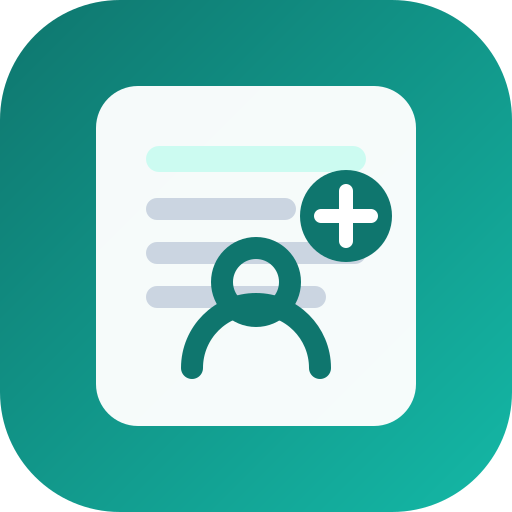

Clinical Decision Support
ช่วยให้พยาบาลเห็นความเสี่ยงสำคัญและเปิดแนวปฏิบัติที่เกี่ยวข้องได้เร็วขึ้น
Fall risk และ Braden alertGuideline hub และ checklist

CANDI ช่วยคัดกรองความเสี่ยง เฝ้าระวัง สรุปข้อมูล และเชื่อมแนวปฏิบัติการพยาบาล เพื่อให้ทีมพยาบาลตัดสินใจบนข้อมูลที่ครบถ้วนและต่อเนื่อง
ออกแบบให้การประเมิน ความเสี่ยง การตัดสินใจ และการบันทึกเวชระเบียนเชื่อมต่อกันใน workflow เดียว
ช่วยให้พยาบาลเห็นความเสี่ยงสำคัญและเปิดแนวปฏิบัติที่เกี่ยวข้องได้เร็วขึ้น
แยกการแสดงผล ข้อมูลเวชระเบียน และชั้นสนับสนุนการตัดสินใจอย่างเป็นระบบ
เชื่อมแบบประเมิน progress note และ handoff เพื่อลดการบันทึกซ้ำจากกระดาษ
ช่วยสรุปข้อมูล ตั้งต้นข้อความ และชี้ประเด็นที่ควรตรวจซ้ำ โดยไม่ตัดสินใจแทนพยาบาล